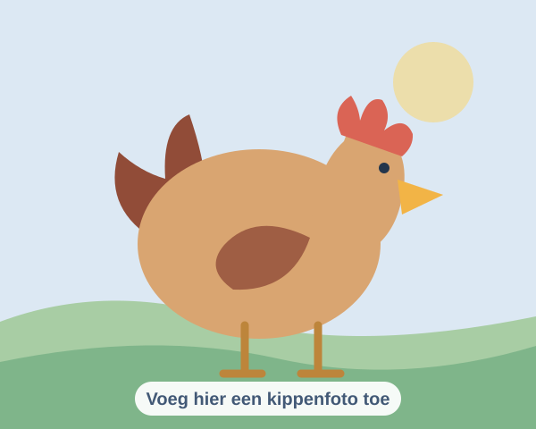
Bewoner van de tuin
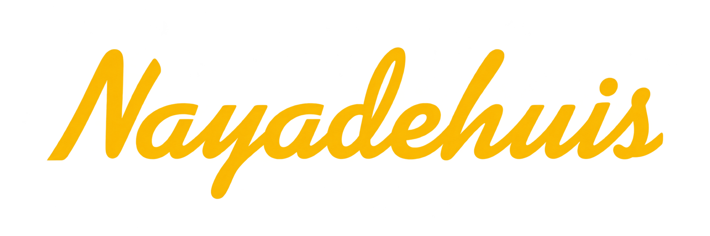
Een huis vol verhalen, gezelligheid en studentenleven.
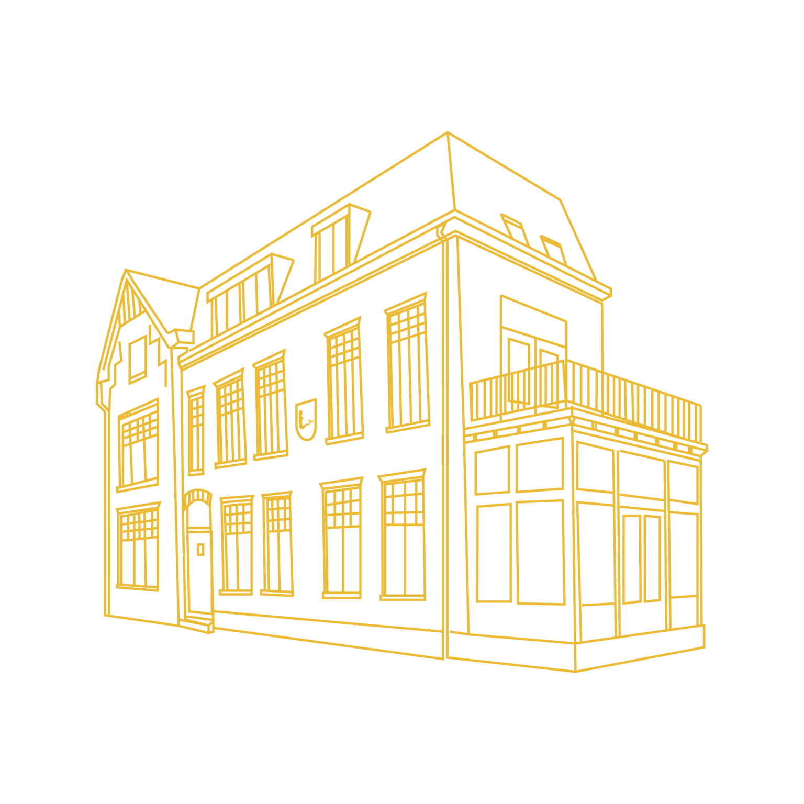
Het begon allemaal lang geleden. Waar een bloeiende vereniging zich afsplitst van het Eindhovense Studenten Corps, ontstaat Nayade. En met zich, ook een verenigingshuis als centrum van alle gezelligheid.
Al sinds 1971 weten wij ons te vestigen aan de Nassaustraat 3 in een werkelijk prachtpand van een studentenhuis. Eindhovens pracht, maar vooral een droogrek voor natte zwemkledij.
Ben je op zoek naar een studentenkamer en doe je aan waterpolo of wedstrijdzwemmen? Stuur dan snel een mailtje naar bewoners@nayadehuis.nl!
Ontdek onze geschiedenis
De mooiste momenten en herinneringen van ons huis.
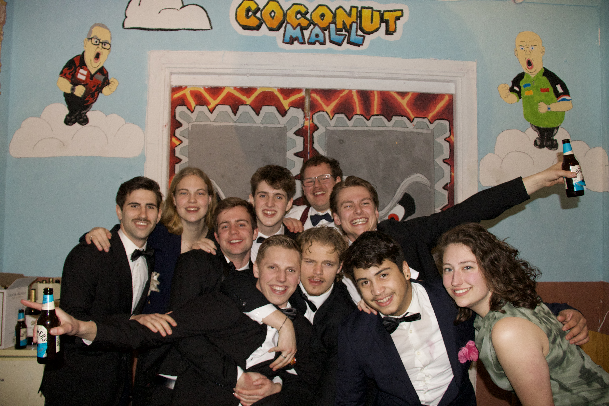
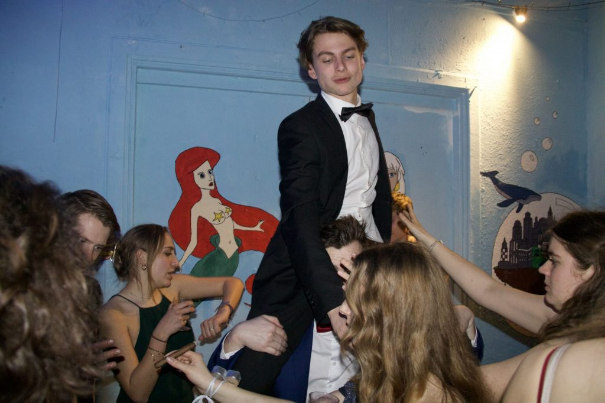
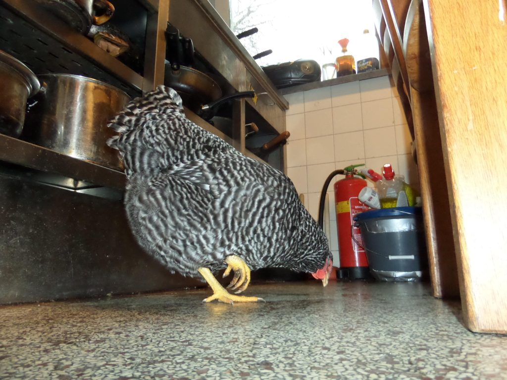
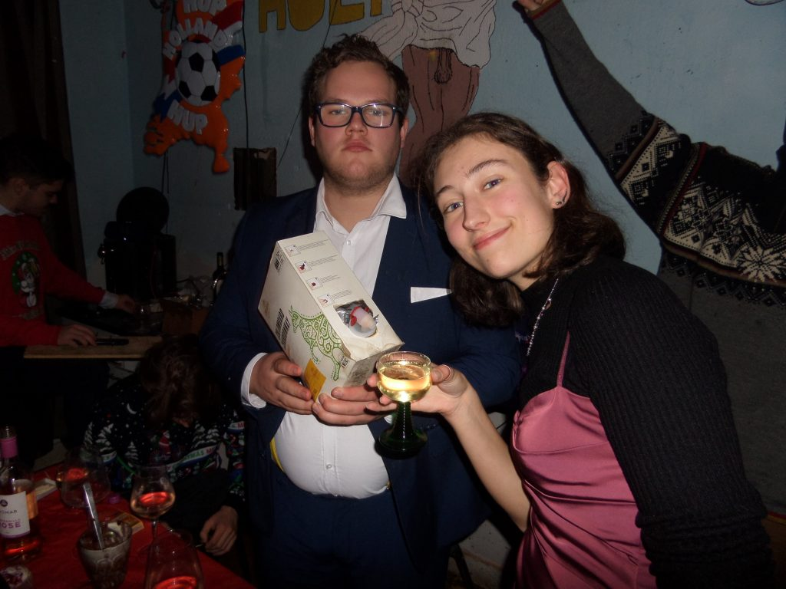
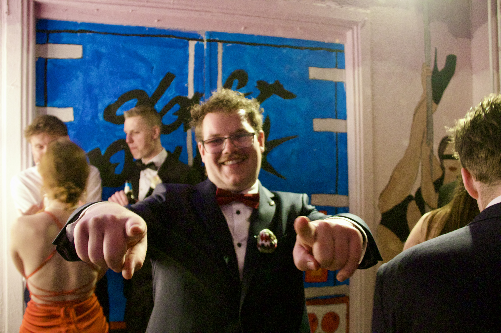
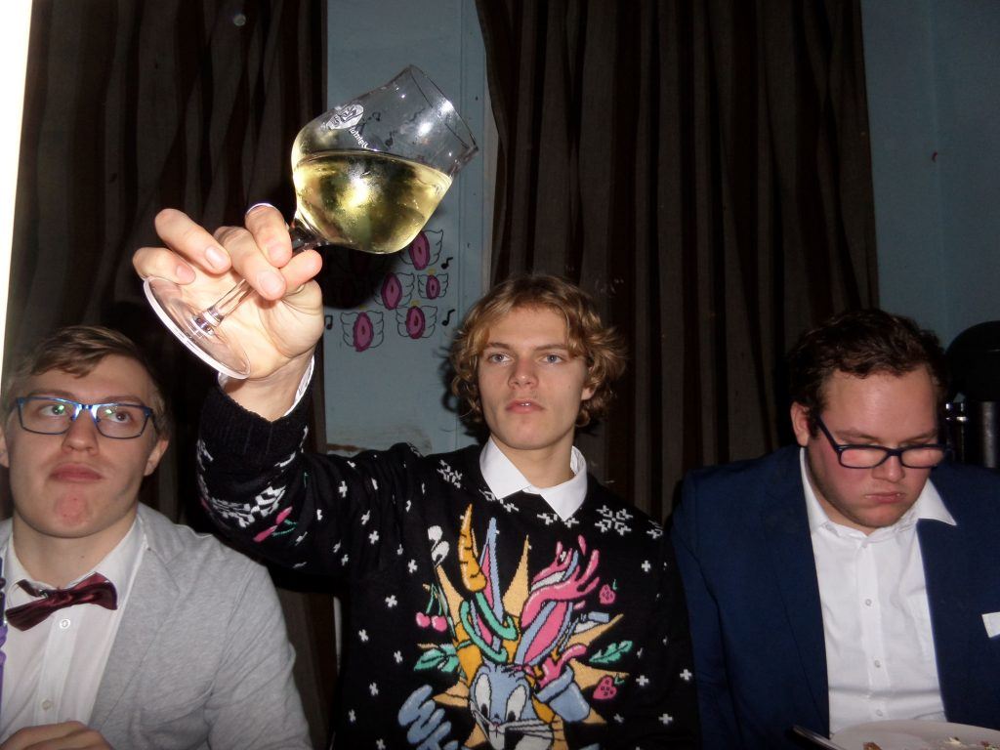
Bij het Nayadehuis wonen niet alleen studenten. Ook onze drie kippen horen helemaal bij het huis!

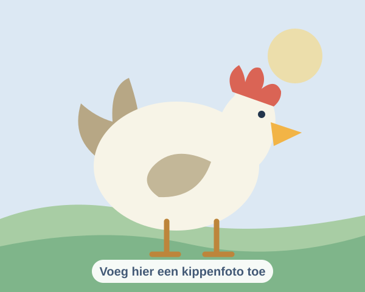
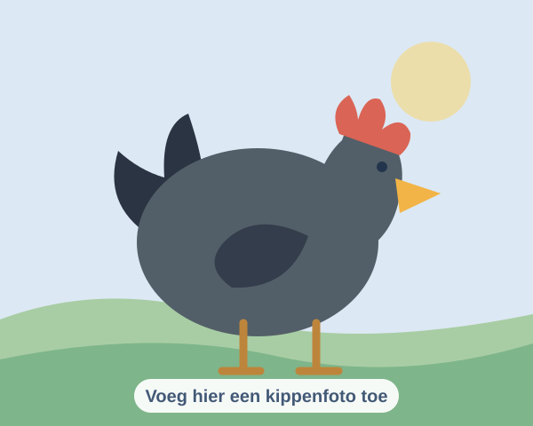
De Top 3 van de Nayadehuis-Snel-Bier-Drink-Top20!
Heren 1
Heren 3
Zwemmer
Diep in het prachtige Eindhoven ligt het studentenhuis van de beste studenten zwem- en waterpolovereniging uit de regio.
In het stille oord van Oud-Strijp kun je altijd langskomen voor een biertje of een koffie.
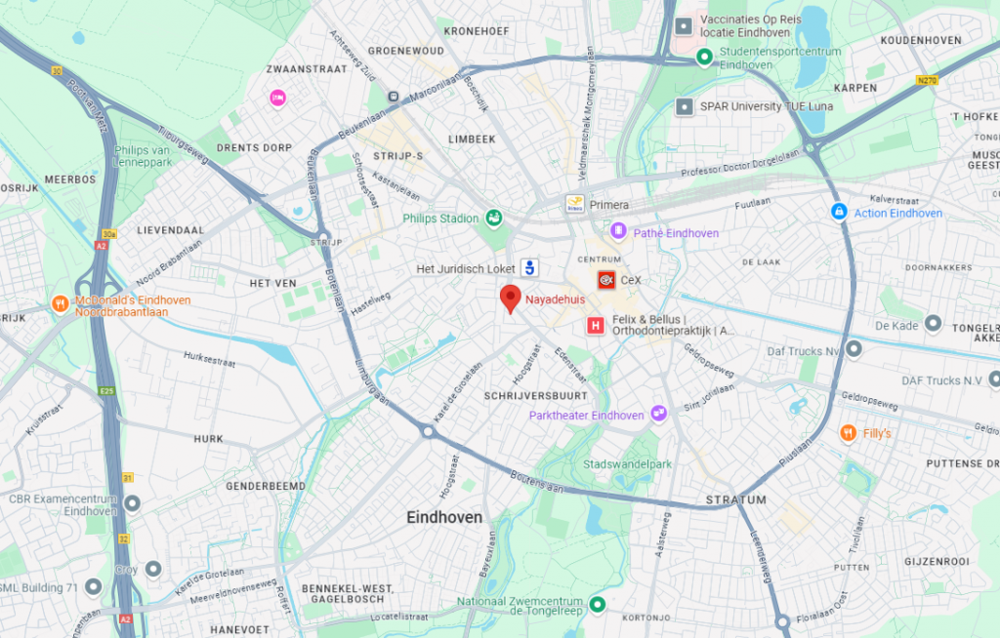
Nassaustraat 3 · Eindhoven
Mail ons voor vragen en informatie.